Some tips with xarray and pandas#
We have massively different levels here
Try to make some aims for technical skills you can learn!
If you are beginning with python → learn the basics
If you are good at basic python → learn new packages and tricks
If you know all the packages → improve your skills with producing your own software, organising your code etc.
If you don’t know git and github → get better at this!
Learn from each other!
Every time I taught on this course, I learned something!
AI is a real game changer and we are figuring out together how to use it well!
Especially great to give us feedback on this.
CHANGE: Etherpad for the course
Note to Sara: do mentiJupyter notebooks:#
Jupyter is an interactive computing environment that allows users to write, run, and document code in a single interface, typically using notebooks that combine live code, text, equations, and visualizations. It supports multiple programming languages (like Python, R, and Julia) and is widely used in data science, research, and education for reproducible analysis and exploration.
a=1
import numpy as np
a
1
cells can be markdown or code
run cell by shift+enter, cmd+enter, ctrl+enter
Kernel: You can restart, interrupt etc.
Tricks:
mark multiple places at the same time
cmd or ctr + D: select same snippet.
Escape to move out of cell
Once out of cell mode, you can copy (c), paste (v), insert cell above (a), incert cell below (b) etc.
Contextual help: cmd+i or ctrl+i
.
.
.
.
.
What are pandas and xarray?#
Pandas → like a spreadsheet 2D data with columns and rows
xarray → like pandas, but in N dimensions
Use the functionality these packages gives you! Will help you avoid mistakes. Try to get as good as possible :)
Pandas#
 (Source: https://www.geeksforgeeks.org/python-pandas-dataframe/)
(Source: https://www.geeksforgeeks.org/python-pandas-dataframe/)
Xarray#
 (Source: https://docs.xarray.dev/)
(Source: https://docs.xarray.dev/)
.
.
.
.
.
1. Import python packages#
import xarray as xr
xr.set_options(display_style='html')
import intake
import cftime
import matplotlib.pyplot as plt
import cartopy.crs as ccrs
import numpy as np
import pandas as pd
import datetime
import seaborn as sns
%matplotlib inline
2. Pandas basics:#
Can read a range of data formats, e.g.
pd.read_csv('filename.csv')
pd.read_excel('filename')
pd.read_sql('filename')
See overview: https://pandas.pydata.org/pandas-docs/stable/user_guide/io.html
#fn = '~/shared-craas2-ns9988k-ns9252k/escience2025/data/group3/eScience2024/zeppelin-ebc-2015-2019-1.csv'
fn = '~/shared-clinfra-ns12127k-ns9252k/eScience-courses/escience2024/data/data_group4/zeppelin-ebc-2015-2019-1.csv'
Read in as a DataFrame#
import pandas as pd
df = pd.read_csv(fn, index_col=0, parse_dates=True )
df
| CVI_status | BC_cvi | z | BC_tot | flag | visibility | |
|---|---|---|---|---|---|---|
| time | ||||||
| 2015-11-13 00:00:00 | off | 0.00 | 0.30583 | 0.04 | bad | 34596.2 |
| 2015-11-13 00:01:00 | off | 0.00 | 0.43400 | 0.02 | bad | 34481.7 |
| 2015-11-13 00:02:00 | off | 0.04 | 0.53317 | 0.01 | bad | 34572.3 |
| 2015-11-13 00:03:00 | off | 0.05 | 0.60250 | 0.02 | bad | 34061.8 |
| 2015-11-13 00:04:00 | off | -0.01 | 1.16433 | 0.02 | bad | 34461.8 |
| ... | ... | ... | ... | ... | ... | ... |
| 2019-11-15 10:30:00 | off | 0.02 | 1.14300 | 0.02 | good | 36983.4 |
| 2019-11-15 10:31:00 | off | 0.00 | 1.34233 | 0.01 | good | 38964.4 |
| 2019-11-15 10:32:00 | off | 0.05 | 0.68667 | -0.00 | good | 45981.7 |
| 2019-11-15 10:33:00 | off | -0.02 | 1.00450 | -0.00 | good | 48805.2 |
| 2019-11-15 10:34:00 | off | 0.04 | 0.86300 | 0.01 | good | 47112.9 |
2107355 rows × 6 columns
Select a column:#
One column is called a Series
df['BC_cvi']
time
2015-11-13 00:00:00 0.00
2015-11-13 00:01:00 0.00
2015-11-13 00:02:00 0.04
2015-11-13 00:03:00 0.05
2015-11-13 00:04:00 -0.01
...
2019-11-15 10:30:00 0.02
2019-11-15 10:31:00 0.00
2019-11-15 10:32:00 0.05
2019-11-15 10:33:00 -0.02
2019-11-15 10:34:00 0.04
Name: BC_cvi, Length: 2107355, dtype: float64
Select data in general:#
Several ways to do this:
df.loc[<from_index>: <to_index>, <from_column>:<to_column>]
df.loc['2016-01-01':'2016-01-02', 'CVI_status':'BC_cvi']#['BC_cvi']
| CVI_status | BC_cvi | |
|---|---|---|
| time | ||
| 2016-01-01 00:00:00 | off | 0.13 |
| 2016-01-01 00:01:00 | off | 0.11 |
| 2016-01-01 00:02:00 | off | 0.03 |
| 2016-01-01 00:03:00 | off | 0.03 |
| 2016-01-01 00:04:00 | off | 0.00 |
| ... | ... | ... |
| 2016-01-02 23:55:00 | off | 0.02 |
| 2016-01-02 23:56:00 | off | 0.00 |
| 2016-01-02 23:57:00 | off | 0.12 |
| 2016-01-02 23:58:00 | off | 0.00 |
| 2016-01-02 23:59:00 | off | 0.07 |
2880 rows × 2 columns
The same, but using indexes:
df.iloc[0:5, 0:2]#['BC_cvi']
| CVI_status | BC_cvi | |
|---|---|---|
| time | ||
| 2015-11-13 00:00:00 | off | 0.00 |
| 2015-11-13 00:01:00 | off | 0.00 |
| 2015-11-13 00:02:00 | off | 0.04 |
| 2015-11-13 00:03:00 | off | 0.05 |
| 2015-11-13 00:04:00 | off | -0.01 |
Plot something simple:#
df.loc['2016-01-01':'2016-02-01','BC_cvi'].plot()
<Axes: xlabel='time'>
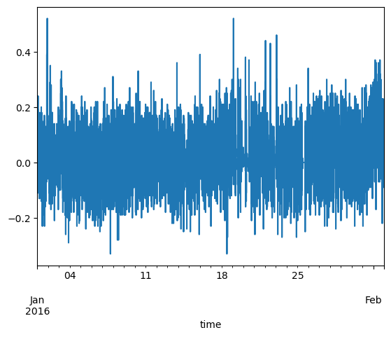
Save your dataframe:#
df.to_csv('my_new_dataset.csv')
3. Xarray and netcdf#
3.1 Reading in the data from a netcdf file:#
Netcdf format:#
NetCDF (Network Common Data Form) is a widely used, platform-independent file format designed for array-oriented scientific data.
It is self-describing, meaning metadata (e.g., units, descriptions) is stored alongside the data.
Supports multidimensional data structures, such as time-varying grids (e.g.,
time,latitude,longitude,level).Commonly used in earth and atmospheric sciences for storing model outputs, reanalyses, and satellite data. Developed at UCAR.
Organizes content into:
Dimensions (e.g.,
time,lat,lon)Variables (e.g., temperature, pressure)
Attributes (e.g., units, standard names, conventions)
Enables efficient storage and retrieval, even for very large datasets.
Supported by many scientific tools and libraries including xarray, netCDF4, NCO, and CDO.
Ideal for interoperability, reproducibility, and long-term data archiving.
Xarray is a Python library designed to work with multi-dimensional arrays and datasets, particularly those used in earth sciences, climate science, and atmospheric science. It builds upon and extends the functionality of NumPy, Pandas, and NetCDF, providing a high-level interface for working with labeled, multi-dimensional data.
.
.
.
.
.
Open dataset#
Use
xarraypython package to analyze netCDF datasetopen_datasetallows to get all the metadata without loading data into memory.with
xarray, we only load into memory what is needed.
path='filename.nc'
ds = xr.open_dataset(path)
Opening multiple files:#
list_of_files = [
'file1.nc',
'file2.nc'
]
xr.open_mfdataset(list_of_files, concat_dim='time',combine='by_coords')
Example:#
(I’ve gone hunting in your data folders)
f1 = '~/shared-clinfra-ns12127k-ns9252k/eScience-courses/escience2025/data/group6/CMIP6/abrupt-4xCO2/rlut_Amon_CAMS-CSM1-0_abrupt-4xCO2_r1i1p1f1_gn.nc'
#f2 = '~/shared-craas2-ns9988k-ns9252k/escience2025/data/group6/CMIP6/abrupt-4xCO2/rsut_Amon_CAMS-CSM1-0_abrupt-4xCO2_r1i1p1f1_gn.nc'
f2 = '~/shared-clinfra-ns12127k-ns9252k/eScience-courses/escience2025/data/group6/CMIP6/abrupt-4xCO2/rsut_Amon_CAMS-CSM1-0_abrupt-4xCO2_r1i1p1f1_gn.nc'
Open one file:#
xr.open_dataset(f1)
/opt/conda/envs/pangeo/lib/python3.12/site-packages/dask/config.py:786: FutureWarning: Dask configuration key 'distributed.p2p.disk' has been deprecated; please use 'distributed.p2p.storage.disk' instead
warnings.warn(
<xarray.Dataset> Size: 369MB
Dimensions: (time: 1800, lat: 160, lon: 320)
Coordinates:
* time (time) object 14kB 0001-01-01 00:00:00 ... 0150-12-01 00:00:00
* lat (lat) float64 1kB -89.14 -88.03 -86.91 -85.79 ... 86.91 88.03 89.14
* lon (lon) float64 3kB 0.0 1.125 2.25 3.375 ... 355.5 356.6 357.8 358.9
Data variables:
rlut (time, lat, lon) float32 369MB ...
Attributes: (12/50)
CDI: Climate Data Interface version 2.0.5 (https://mpi...
Conventions: CF-1.7 CMIP-6.2
source: CAMS_CSM 1.0 (2016): \naerosol: none\natmos: ECHA...
institution: Chinese Academy of Meteorological Sciences, Beiji...
activity_id: CMIP
branch_method: Standard
... ...
tracking_id: hdl:21.14100/73320c27-d385-493c-9674-1470acacb8ed
variable_id: rlut
variant_label: r1i1p1f1
license: CMIP6 model data produced by Lawrence Livermore P...
cmor_version: 3.4.0
CDO: Climate Data Operators version 2.0.5 (https://mpi...Open multiple files:#
ds1 = xr.open_mfdataset([f1, f2])
3.1 Check how your dataset looks#
Notice:
Coordinates
Data variables (each with assigned coordinates)
Attributes
ds1
<xarray.Dataset> Size: 737MB
Dimensions: (time: 1800, lat: 160, lon: 320)
Coordinates:
* time (time) object 14kB 0001-01-01 00:00:00 ... 0150-12-01 00:00:00
* lat (lat) float64 1kB -89.14 -88.03 -86.91 -85.79 ... 86.91 88.03 89.14
* lon (lon) float64 3kB 0.0 1.125 2.25 3.375 ... 355.5 356.6 357.8 358.9
Data variables:
rlut (time, lat, lon) float32 369MB dask.array<chunksize=(1, 160, 320), meta=np.ndarray>
rsut (time, lat, lon) float32 369MB dask.array<chunksize=(1, 160, 320), meta=np.ndarray>
Attributes: (12/50)
CDI: Climate Data Interface version 2.0.5 (https://mpi...
Conventions: CF-1.7 CMIP-6.2
source: CAMS_CSM 1.0 (2016): \naerosol: none\natmos: ECHA...
institution: Chinese Academy of Meteorological Sciences, Beiji...
activity_id: CMIP
branch_method: Standard
... ...
tracking_id: hdl:21.14100/73320c27-d385-493c-9674-1470acacb8ed
variable_id: rlut
variant_label: r1i1p1f1
license: CMIP6 model data produced by Lawrence Livermore P...
cmor_version: 3.4.0
CDO: Climate Data Operators version 2.0.5 (https://mpi....
.
.
.
.
3.2 Read in CMIP6 data: We will skip this next part, but you can check it later to read data:#
cat_url = "https://storage.googleapis.com/cmip6/pangeo-cmip6.json"
#cat_url = '/mnt/clinfra-ns12127k/data/catalogs/noresm.json'#craas2-ns9988k/data/catalogs/cmip6.json'
col = intake.open_esm_datastore(cat_url)
col
pangeo-cmip6 catalog with 7674 dataset(s) from 514818 asset(s):
| unique | |
|---|---|
| activity_id | 18 |
| institution_id | 36 |
| source_id | 88 |
| experiment_id | 170 |
| member_id | 657 |
| table_id | 37 |
| variable_id | 700 |
| grid_label | 10 |
| zstore | 514818 |
| dcpp_init_year | 61 |
| version | 736 |
| derived_variable_id | 0 |
Search corresponding data#
Please check here for info about CMIP and variables :)
Particularly useful is maybe the variable search which you find here: https://clipc-services.ceda.ac.uk/dreq/mipVars.html
cat = col.search(source_id = ['CESM2'],
experiment_id=['historical'],
table_id=['Amon','fx','AERmon'],
variable_id=['tas','hurs', 'areacella','mmrso4' ],
member_id=['r1i1p1f1'],
)
cat.df
| activity_id | institution_id | source_id | experiment_id | member_id | table_id | variable_id | grid_label | zstore | dcpp_init_year | version | |
|---|---|---|---|---|---|---|---|---|---|---|---|
| 0 | CMIP | NCAR | CESM2 | historical | r1i1p1f1 | fx | areacella | gn | gs://cmip6/CMIP6/CMIP/NCAR/CESM2/historical/r1... | <NA> | 20190308 |
| 1 | CMIP | NCAR | CESM2 | historical | r1i1p1f1 | AERmon | mmrso4 | gn | gs://cmip6/CMIP6/CMIP/NCAR/CESM2/historical/r1... | <NA> | 20190308 |
| 2 | CMIP | NCAR | CESM2 | historical | r1i1p1f1 | Amon | hurs | gn | gs://cmip6/CMIP6/CMIP/NCAR/CESM2/historical/r1... | <NA> | 20190308 |
| 3 | CMIP | NCAR | CESM2 | historical | r1i1p1f1 | Amon | tas | gn | gs://cmip6/CMIP6/CMIP/NCAR/CESM2/historical/r1... | <NA> | 20190308 |
cat.esmcat.aggregation_control.groupby_attrs = ['activity_id','experiment_id', 'source_id','table_id','grid_label']
cat.esmcat.aggregation_control.groupby_attrs
['activity_id', 'experiment_id', 'source_id', 'table_id', 'grid_label']
Create dictionary from the list of datasets we found#
This step may take several minutes so be patient!
dset_dict = cat.to_dataset_dict(zarr_kwargs={'use_cftime':True})
--> The keys in the returned dictionary of datasets are constructed as follows:
'activity_id.experiment_id.source_id.table_id.grid_label'
/opt/conda/envs/pangeo/lib/python3.12/site-packages/intake_esm/source.py:308: FutureWarning: In a future version of xarray the default value for compat will change from compat='no_conflicts' to compat='override'. This is likely to lead to different results when combining overlapping variables with the same name. To opt in to new defaults and get rid of these warnings now use `set_options(use_new_combine_kwarg_defaults=True) or set compat explicitly.
self._ds = xr.combine_by_coords(
/opt/conda/envs/pangeo/lib/python3.12/site-packages/intake_esm/source.py:308: FutureWarning: In a future version of xarray the default value for compat will change from compat='no_conflicts' to compat='override'. This is likely to lead to different results when combining overlapping variables with the same name. To opt in to new defaults and get rid of these warnings now use `set_options(use_new_combine_kwarg_defaults=True) or set compat explicitly.
self._ds = xr.combine_by_coords(
/opt/conda/envs/pangeo/lib/python3.12/site-packages/intake_esm/source.py:308: FutureWarning: In a future version of xarray the default value for compat will change from compat='no_conflicts' to compat='override'. This is likely to lead to different results when combining overlapping variables with the same name. To opt in to new defaults and get rid of these warnings now use `set_options(use_new_combine_kwarg_defaults=True) or set compat explicitly.
self._ds = xr.combine_by_coords(
list(dset_dict.keys())
['CMIP.historical.CESM2.fx.gn',
'CMIP.historical.CESM2.AERmon.gn',
'CMIP.historical.CESM2.Amon.gn']
ds_list =[]
for k in dset_dict.keys():
ds = dset_dict[k]
for v in ['lon_bnds', 'lat_bnds', 'time_bnds']:
if v in ds:
ds= ds.drop_vars(v)
ds_list.append(ds)
ds = xr.merge(ds_list,compat='override')
.
.
.
.
.
4. Check how your dataset looks#
Notice:
Coordinates
Data variables (each with assigned coordinates)
Attributes
ds
<xarray.Dataset> Size: 15GB
Dimensions: (member_id: 1, dcpp_init_year: 1, lat: 192, lon: 288,
lev: 32, time: 1980, nbnd: 2)
Coordinates:
* member_id (member_id) object 8B 'r1i1p1f1'
* dcpp_init_year (dcpp_init_year) object 8B None
* lat (lat) float64 2kB -90.0 -89.06 -88.12 ... 88.12 89.06 90.0
* lon (lon) float64 2kB 0.0 1.25 2.5 3.75 ... 356.2 357.5 358.8
* lev (lev) float64 256B -3.643 -7.595 -14.36 ... -976.3 -992.6
* time (time) object 16kB 1850-01-15 12:00:00 ... 2014-12-15 12:...
a_bnds (lev, nbnd) float64 512B dask.array<chunksize=(32, 2), meta=np.ndarray>
b_bnds (lev, nbnd) float64 512B dask.array<chunksize=(32, 2), meta=np.ndarray>
lev_bnds (lev, nbnd) float64 512B dask.array<chunksize=(32, 2), meta=np.ndarray>
Dimensions without coordinates: nbnd
Data variables:
areacella (member_id, dcpp_init_year, lat, lon) float32 221kB dask.array<chunksize=(1, 1, 192, 288), meta=np.ndarray>
a (lev) float64 256B dask.array<chunksize=(32,), meta=np.ndarray>
b (lev) float64 256B dask.array<chunksize=(32,), meta=np.ndarray>
mmrso4 (member_id, dcpp_init_year, time, lev, lat, lon) float32 14GB dask.array<chunksize=(1, 1, 10, 32, 192, 288), meta=np.ndarray>
p0 float32 4B ...
ps (time, lat, lon) float32 438MB dask.array<chunksize=(600, 192, 288), meta=np.ndarray>
hurs (member_id, dcpp_init_year, time, lat, lon) float32 438MB dask.array<chunksize=(1, 1, 600, 192, 288), meta=np.ndarray>
tas (member_id, dcpp_init_year, time, lat, lon) float32 438MB dask.array<chunksize=(1, 1, 600, 192, 288), meta=np.ndarray>
Attributes: (12/58)
Conventions: CF-1.7 CMIP-6.2
activity_id: CMIP
branch_method: standard
branch_time_in_child: 674885.0
branch_time_in_parent: 219000.0
case_id: 15
... ...
intake_esm_attrs:variable_id: areacella
intake_esm_attrs:grid_label: gn
intake_esm_attrs:zstore: gs://cmip6/CMIP6/CMIP/NCAR/CESM2/histor...
intake_esm_attrs:version: 20190308
intake_esm_attrs:_data_format_: zarr
intake_esm_dataset_key: CMIP.historical.CESM2.fx.gn.
.
.
.
.
5. Sometimes we want to do some nice tweaks before we start:#
5.1 Indexing/selecting data:#
Xarray loads data only when it needs to (it’s lazy, someone else can explain) – pandas loads everything right away
You might want to early on define the subset of data you want to look at so that you don’t end up loading a lot of extra data.
See here for nice overview#
In order to reduce unecessary calculations and loading of data, think about which part of the data you want, and slice early on.
Slice in time: the sel method#
dss = ds.sel(time = slice('1990-01-01','2010-01-01'))
dss
<xarray.Dataset> Size: 2GB
Dimensions: (member_id: 1, dcpp_init_year: 1, lat: 192, lon: 288,
lev: 32, time: 240, nbnd: 2)
Coordinates:
* member_id (member_id) object 8B 'r1i1p1f1'
* dcpp_init_year (dcpp_init_year) object 8B None
* lat (lat) float64 2kB -90.0 -89.06 -88.12 ... 88.12 89.06 90.0
* lon (lon) float64 2kB 0.0 1.25 2.5 3.75 ... 356.2 357.5 358.8
* lev (lev) float64 256B -3.643 -7.595 -14.36 ... -976.3 -992.6
* time (time) object 2kB 1990-01-15 12:00:00 ... 2009-12-15 12:0...
a_bnds (lev, nbnd) float64 512B dask.array<chunksize=(32, 2), meta=np.ndarray>
b_bnds (lev, nbnd) float64 512B dask.array<chunksize=(32, 2), meta=np.ndarray>
lev_bnds (lev, nbnd) float64 512B dask.array<chunksize=(32, 2), meta=np.ndarray>
Dimensions without coordinates: nbnd
Data variables:
areacella (member_id, dcpp_init_year, lat, lon) float32 221kB dask.array<chunksize=(1, 1, 192, 288), meta=np.ndarray>
a (lev) float64 256B dask.array<chunksize=(32,), meta=np.ndarray>
b (lev) float64 256B dask.array<chunksize=(32,), meta=np.ndarray>
mmrso4 (member_id, dcpp_init_year, time, lev, lat, lon) float32 2GB dask.array<chunksize=(1, 1, 10, 32, 192, 288), meta=np.ndarray>
p0 float32 4B ...
ps (time, lat, lon) float32 53MB dask.array<chunksize=(120, 192, 288), meta=np.ndarray>
hurs (member_id, dcpp_init_year, time, lat, lon) float32 53MB dask.array<chunksize=(1, 1, 120, 192, 288), meta=np.ndarray>
tas (member_id, dcpp_init_year, time, lat, lon) float32 53MB dask.array<chunksize=(1, 1, 120, 192, 288), meta=np.ndarray>
Attributes: (12/58)
Conventions: CF-1.7 CMIP-6.2
activity_id: CMIP
branch_method: standard
branch_time_in_child: 674885.0
branch_time_in_parent: 219000.0
case_id: 15
... ...
intake_esm_attrs:variable_id: areacella
intake_esm_attrs:grid_label: gn
intake_esm_attrs:zstore: gs://cmip6/CMIP6/CMIP/NCAR/CESM2/histor...
intake_esm_attrs:version: 20190308
intake_esm_attrs:_data_format_: zarr
intake_esm_dataset_key: CMIP.historical.CESM2.fx.gnA lot of issues arise from people not doing sanity checks.
Example 2: You might want to select only the arctic e.g.:
dss_arctic = dss.sel(lat = slice(60,None))
dss_arctic
<xarray.Dataset> Size: 310MB
Dimensions: (member_id: 1, dcpp_init_year: 1, lat: 32, lon: 288,
lev: 32, time: 240, nbnd: 2)
Coordinates:
* member_id (member_id) object 8B 'r1i1p1f1'
* dcpp_init_year (dcpp_init_year) object 8B None
* lat (lat) float64 256B 60.79 61.73 62.67 ... 88.12 89.06 90.0
* lon (lon) float64 2kB 0.0 1.25 2.5 3.75 ... 356.2 357.5 358.8
* lev (lev) float64 256B -3.643 -7.595 -14.36 ... -976.3 -992.6
* time (time) object 2kB 1990-01-15 12:00:00 ... 2009-12-15 12:0...
a_bnds (lev, nbnd) float64 512B dask.array<chunksize=(32, 2), meta=np.ndarray>
b_bnds (lev, nbnd) float64 512B dask.array<chunksize=(32, 2), meta=np.ndarray>
lev_bnds (lev, nbnd) float64 512B dask.array<chunksize=(32, 2), meta=np.ndarray>
Dimensions without coordinates: nbnd
Data variables:
areacella (member_id, dcpp_init_year, lat, lon) float32 37kB dask.array<chunksize=(1, 1, 32, 288), meta=np.ndarray>
a (lev) float64 256B dask.array<chunksize=(32,), meta=np.ndarray>
b (lev) float64 256B dask.array<chunksize=(32,), meta=np.ndarray>
mmrso4 (member_id, dcpp_init_year, time, lev, lat, lon) float32 283MB dask.array<chunksize=(1, 1, 10, 32, 32, 288), meta=np.ndarray>
p0 float32 4B ...
ps (time, lat, lon) float32 9MB dask.array<chunksize=(120, 32, 288), meta=np.ndarray>
hurs (member_id, dcpp_init_year, time, lat, lon) float32 9MB dask.array<chunksize=(1, 1, 120, 32, 288), meta=np.ndarray>
tas (member_id, dcpp_init_year, time, lat, lon) float32 9MB dask.array<chunksize=(1, 1, 120, 32, 288), meta=np.ndarray>
Attributes: (12/58)
Conventions: CF-1.7 CMIP-6.2
activity_id: CMIP
branch_method: standard
branch_time_in_child: 674885.0
branch_time_in_parent: 219000.0
case_id: 15
... ...
intake_esm_attrs:variable_id: areacella
intake_esm_attrs:grid_label: gn
intake_esm_attrs:zstore: gs://cmip6/CMIP6/CMIP/NCAR/CESM2/histor...
intake_esm_attrs:version: 20190308
intake_esm_attrs:_data_format_: zarr
intake_esm_dataset_key: CMIP.historical.CESM2.fx.gnisel, sel: index selecting#
Select the surface (which in this case is the last index :)
dss
<xarray.Dataset> Size: 2GB
Dimensions: (member_id: 1, dcpp_init_year: 1, lat: 192, lon: 288,
lev: 32, time: 240, nbnd: 2)
Coordinates:
* member_id (member_id) object 8B 'r1i1p1f1'
* dcpp_init_year (dcpp_init_year) object 8B None
* lat (lat) float64 2kB -90.0 -89.06 -88.12 ... 88.12 89.06 90.0
* lon (lon) float64 2kB 0.0 1.25 2.5 3.75 ... 356.2 357.5 358.8
* lev (lev) float64 256B -3.643 -7.595 -14.36 ... -976.3 -992.6
* time (time) object 2kB 1990-01-15 12:00:00 ... 2009-12-15 12:0...
a_bnds (lev, nbnd) float64 512B dask.array<chunksize=(32, 2), meta=np.ndarray>
b_bnds (lev, nbnd) float64 512B dask.array<chunksize=(32, 2), meta=np.ndarray>
lev_bnds (lev, nbnd) float64 512B dask.array<chunksize=(32, 2), meta=np.ndarray>
Dimensions without coordinates: nbnd
Data variables:
areacella (member_id, dcpp_init_year, lat, lon) float32 221kB dask.array<chunksize=(1, 1, 192, 288), meta=np.ndarray>
a (lev) float64 256B dask.array<chunksize=(32,), meta=np.ndarray>
b (lev) float64 256B dask.array<chunksize=(32,), meta=np.ndarray>
mmrso4 (member_id, dcpp_init_year, time, lev, lat, lon) float32 2GB dask.array<chunksize=(1, 1, 10, 32, 192, 288), meta=np.ndarray>
p0 float32 4B ...
ps (time, lat, lon) float32 53MB dask.array<chunksize=(120, 192, 288), meta=np.ndarray>
hurs (member_id, dcpp_init_year, time, lat, lon) float32 53MB dask.array<chunksize=(1, 1, 120, 192, 288), meta=np.ndarray>
tas (member_id, dcpp_init_year, time, lat, lon) float32 53MB dask.array<chunksize=(1, 1, 120, 192, 288), meta=np.ndarray>
Attributes: (12/58)
Conventions: CF-1.7 CMIP-6.2
activity_id: CMIP
branch_method: standard
branch_time_in_child: 674885.0
branch_time_in_parent: 219000.0
case_id: 15
... ...
intake_esm_attrs:variable_id: areacella
intake_esm_attrs:grid_label: gn
intake_esm_attrs:zstore: gs://cmip6/CMIP6/CMIP/NCAR/CESM2/histor...
intake_esm_attrs:version: 20190308
intake_esm_attrs:_data_format_: zarr
intake_esm_dataset_key: CMIP.historical.CESM2.fx.gndss_s = dss.isel(lev=-1)
dss_s
<xarray.Dataset> Size: 213MB
Dimensions: (member_id: 1, dcpp_init_year: 1, lat: 192, lon: 288,
time: 240, nbnd: 2)
Coordinates:
* member_id (member_id) object 8B 'r1i1p1f1'
* dcpp_init_year (dcpp_init_year) object 8B None
* lat (lat) float64 2kB -90.0 -89.06 -88.12 ... 88.12 89.06 90.0
* lon (lon) float64 2kB 0.0 1.25 2.5 3.75 ... 356.2 357.5 358.8
* time (time) object 2kB 1990-01-15 12:00:00 ... 2009-12-15 12:0...
a_bnds (nbnd) float64 16B dask.array<chunksize=(2,), meta=np.ndarray>
b_bnds (nbnd) float64 16B dask.array<chunksize=(2,), meta=np.ndarray>
lev float64 8B -992.6
lev_bnds (nbnd) float64 16B dask.array<chunksize=(2,), meta=np.ndarray>
Dimensions without coordinates: nbnd
Data variables:
areacella (member_id, dcpp_init_year, lat, lon) float32 221kB dask.array<chunksize=(1, 1, 192, 288), meta=np.ndarray>
a float64 8B dask.array<chunksize=(), meta=np.ndarray>
b float64 8B dask.array<chunksize=(), meta=np.ndarray>
mmrso4 (member_id, dcpp_init_year, time, lat, lon) float32 53MB dask.array<chunksize=(1, 1, 10, 192, 288), meta=np.ndarray>
p0 float32 4B ...
ps (time, lat, lon) float32 53MB dask.array<chunksize=(120, 192, 288), meta=np.ndarray>
hurs (member_id, dcpp_init_year, time, lat, lon) float32 53MB dask.array<chunksize=(1, 1, 120, 192, 288), meta=np.ndarray>
tas (member_id, dcpp_init_year, time, lat, lon) float32 53MB dask.array<chunksize=(1, 1, 120, 192, 288), meta=np.ndarray>
Attributes: (12/58)
Conventions: CF-1.7 CMIP-6.2
activity_id: CMIP
branch_method: standard
branch_time_in_child: 674885.0
branch_time_in_parent: 219000.0
case_id: 15
... ...
intake_esm_attrs:variable_id: areacella
intake_esm_attrs:grid_label: gn
intake_esm_attrs:zstore: gs://cmip6/CMIP6/CMIP/NCAR/CESM2/histor...
intake_esm_attrs:version: 20190308
intake_esm_attrs:_data_format_: zarr
intake_esm_dataset_key: CMIP.historical.CESM2.fx.gn.
.
.
.
.
5.2 Calculates variables and assign attributes!#
Nice for plotting and to keep track of what is in your dataset (especially ‘units’ and ‘standard_name’/’long_name’ will be looked for by xarray.
dss['T_C'] = dss['tas']-273.15
dss['T_C']
<xarray.DataArray 'T_C' (member_id: 1, dcpp_init_year: 1, time: 240, lat: 192,
lon: 288)> Size: 53MB
dask.array<sub, shape=(1, 1, 240, 192, 288), dtype=float32, chunksize=(1, 1, 120, 192, 288), chunktype=numpy.ndarray>
Coordinates:
* member_id (member_id) object 8B 'r1i1p1f1'
* dcpp_init_year (dcpp_init_year) object 8B None
* time (time) object 2kB 1990-01-15 12:00:00 ... 2009-12-15 12:0...
* lat (lat) float64 2kB -90.0 -89.06 -88.12 ... 88.12 89.06 90.0
* lon (lon) float64 2kB 0.0 1.25 2.5 3.75 ... 356.2 357.5 358.8
Attributes: (12/19)
cell_measures: area: areacella
cell_methods: area: time: mean
comment: near-surface (usually, 2 meter) air temperature
description: near-surface (usually, 2 meter) air temperature
frequency: mon
id: tas
... ...
time_label: time-mean
time_title: Temporal mean
title: Near-Surface Air Temperature
type: real
units: K
variable_id: tas#dss['T_C'] = dss['T_C'].assign_attrs({'units': 'deg C'})
dss['T_C'] = dss['T_C'].assign_attrs({'units': '$^\circ$ C'})
dss['T_C'] = dss['T_C'].assign_attrs({'long_name': 'Temperature at surface'})
<>:2: SyntaxWarning: invalid escape sequence '\c'
<>:2: SyntaxWarning: invalid escape sequence '\c'
/tmp/ipykernel_1197/3247141791.py:2: SyntaxWarning: invalid escape sequence '\c'
dss['T_C'] = dss['T_C'].assign_attrs({'units': '$^\circ$ C'})
dss['T_C']
<xarray.DataArray 'T_C' (member_id: 1, dcpp_init_year: 1, time: 240, lat: 192,
lon: 288)> Size: 53MB
dask.array<sub, shape=(1, 1, 240, 192, 288), dtype=float32, chunksize=(1, 1, 120, 192, 288), chunktype=numpy.ndarray>
Coordinates:
* member_id (member_id) object 8B 'r1i1p1f1'
* dcpp_init_year (dcpp_init_year) object 8B None
* time (time) object 2kB 1990-01-15 12:00:00 ... 2009-12-15 12:0...
* lat (lat) float64 2kB -90.0 -89.06 -88.12 ... 88.12 89.06 90.0
* lon (lon) float64 2kB 0.0 1.25 2.5 3.75 ... 356.2 357.5 358.8
Attributes: (12/19)
cell_measures: area: areacella
cell_methods: area: time: mean
comment: near-surface (usually, 2 meter) air temperature
description: near-surface (usually, 2 meter) air temperature
frequency: mon
id: tas
... ...
time_label: time-mean
time_title: Temporal mean
title: Near-Surface Air Temperature
type: real
units: $^\circ$ C
variable_id: tasdss['time']
<xarray.DataArray 'time' (time: 240)> Size: 2kB
array([cftime.DatetimeNoLeap(1990, 1, 15, 12, 0, 0, 0, has_year_zero=True),
cftime.DatetimeNoLeap(1990, 2, 14, 0, 0, 0, 0, has_year_zero=True),
cftime.DatetimeNoLeap(1990, 3, 15, 12, 0, 0, 0, has_year_zero=True),
...,
cftime.DatetimeNoLeap(2009, 10, 15, 12, 0, 0, 0, has_year_zero=True),
cftime.DatetimeNoLeap(2009, 11, 15, 0, 0, 0, 0, has_year_zero=True),
cftime.DatetimeNoLeap(2009, 12, 15, 12, 0, 0, 0, has_year_zero=True)],
shape=(240,), dtype=object)
Coordinates:
* time (time) object 2kB 1990-01-15 12:00:00 ... 2009-12-15 12:00:00
Attributes:
axis: T
bounds: time_bnds
standard_name: time
title: time
type: doubleThis calendar is in cftime and noLeap. Sometimes this causes issues when plotting timeseries, so just for fun we will convert to a standard datetime64 index calendar because it’s anyway monthly.
dss['time'] = dss['time'].to_dataframe().index.to_datetimeindex()
/tmp/ipykernel_1197/4195133999.py:1: FutureWarning: In a future version of xarray to_datetimeindex will default to returning a 'us'-resolution DatetimeIndex instead of a 'ns'-resolution DatetimeIndex. This warning can be silenced by explicitly passing the `time_unit` keyword argument.
dss['time'] = dss['time'].to_dataframe().index.to_datetimeindex()
/tmp/ipykernel_1197/4195133999.py:1: RuntimeWarning: Converting a CFTimeIndex with dates from a non-standard calendar, 'noleap', to a pandas.DatetimeIndex, which uses dates from the standard calendar. This may lead to subtle errors in operations that depend on the length of time between dates.
dss['time'] = dss['time'].to_dataframe().index.to_datetimeindex()
dss['time']
<xarray.DataArray 'time' (time: 240)> Size: 2kB
array(['1990-01-15T12:00:00.000000000', '1990-02-14T00:00:00.000000000',
'1990-03-15T12:00:00.000000000', ..., '2009-10-15T12:00:00.000000000',
'2009-11-15T00:00:00.000000000', '2009-12-15T12:00:00.000000000'],
shape=(240,), dtype='datetime64[ns]')
Coordinates:
* time (time) datetime64[ns] 2kB 1990-01-15T12:00:00 ... 2009-12-15T12:...3.3 Convert longitude:#
this data comes in 0–360 degrees, but often -180 to 180 is more convenient. So we can convert:
NOTE:Maybe you want to put this in a module? Or a package..
dss
<xarray.Dataset> Size: 2GB
Dimensions: (member_id: 1, dcpp_init_year: 1, lat: 192, lon: 288,
lev: 32, time: 240, nbnd: 2)
Coordinates:
* member_id (member_id) object 8B 'r1i1p1f1'
* dcpp_init_year (dcpp_init_year) object 8B None
* lat (lat) float64 2kB -90.0 -89.06 -88.12 ... 88.12 89.06 90.0
* lon (lon) float64 2kB 0.0 1.25 2.5 3.75 ... 356.2 357.5 358.8
* lev (lev) float64 256B -3.643 -7.595 -14.36 ... -976.3 -992.6
* time (time) datetime64[ns] 2kB 1990-01-15T12:00:00 ... 2009-12...
a_bnds (lev, nbnd) float64 512B dask.array<chunksize=(32, 2), meta=np.ndarray>
b_bnds (lev, nbnd) float64 512B dask.array<chunksize=(32, 2), meta=np.ndarray>
lev_bnds (lev, nbnd) float64 512B dask.array<chunksize=(32, 2), meta=np.ndarray>
Dimensions without coordinates: nbnd
Data variables:
areacella (member_id, dcpp_init_year, lat, lon) float32 221kB dask.array<chunksize=(1, 1, 192, 288), meta=np.ndarray>
a (lev) float64 256B dask.array<chunksize=(32,), meta=np.ndarray>
b (lev) float64 256B dask.array<chunksize=(32,), meta=np.ndarray>
mmrso4 (member_id, dcpp_init_year, time, lev, lat, lon) float32 2GB dask.array<chunksize=(1, 1, 10, 32, 192, 288), meta=np.ndarray>
p0 float32 4B ...
ps (time, lat, lon) float32 53MB dask.array<chunksize=(120, 192, 288), meta=np.ndarray>
hurs (member_id, dcpp_init_year, time, lat, lon) float32 53MB dask.array<chunksize=(1, 1, 120, 192, 288), meta=np.ndarray>
tas (member_id, dcpp_init_year, time, lat, lon) float32 53MB dask.array<chunksize=(1, 1, 120, 192, 288), meta=np.ndarray>
T_C (member_id, dcpp_init_year, time, lat, lon) float32 53MB dask.array<chunksize=(1, 1, 120, 192, 288), meta=np.ndarray>
Attributes: (12/58)
Conventions: CF-1.7 CMIP-6.2
activity_id: CMIP
branch_method: standard
branch_time_in_child: 674885.0
branch_time_in_parent: 219000.0
case_id: 15
... ...
intake_esm_attrs:variable_id: areacella
intake_esm_attrs:grid_label: gn
intake_esm_attrs:zstore: gs://cmip6/CMIP6/CMIP/NCAR/CESM2/histor...
intake_esm_attrs:version: 20190308
intake_esm_attrs:_data_format_: zarr
intake_esm_dataset_key: CMIP.historical.CESM2.fx.gnfrom my_package import convert_lon_to_180, convert_lon_to_180
def convert_lon_to_180(ds):
ds['lon'] = (ds['lon']+ 180) % 360 - 180
ds = ds.sortby('lon')
return ds
def convert_lon_to_360(ds):
ds['lon'] =ds['lon']% 360
ds = ds.sortby('lon')
return lon % 360
(migth want to move this to a module!)
dss = convert_lon_to_180(dss)
dss
<xarray.Dataset> Size: 2GB
Dimensions: (member_id: 1, dcpp_init_year: 1, lat: 192, lon: 288,
lev: 32, time: 240, nbnd: 2)
Coordinates:
* member_id (member_id) object 8B 'r1i1p1f1'
* dcpp_init_year (dcpp_init_year) object 8B None
* lat (lat) float64 2kB -90.0 -89.06 -88.12 ... 88.12 89.06 90.0
* lon (lon) float64 2kB -180.0 -178.8 -177.5 ... 176.2 177.5 178.8
* lev (lev) float64 256B -3.643 -7.595 -14.36 ... -976.3 -992.6
* time (time) datetime64[ns] 2kB 1990-01-15T12:00:00 ... 2009-12...
a_bnds (lev, nbnd) float64 512B dask.array<chunksize=(32, 2), meta=np.ndarray>
b_bnds (lev, nbnd) float64 512B dask.array<chunksize=(32, 2), meta=np.ndarray>
lev_bnds (lev, nbnd) float64 512B dask.array<chunksize=(32, 2), meta=np.ndarray>
Dimensions without coordinates: nbnd
Data variables:
areacella (member_id, dcpp_init_year, lat, lon) float32 221kB dask.array<chunksize=(1, 1, 192, 288), meta=np.ndarray>
a (lev) float64 256B dask.array<chunksize=(32,), meta=np.ndarray>
b (lev) float64 256B dask.array<chunksize=(32,), meta=np.ndarray>
mmrso4 (member_id, dcpp_init_year, time, lev, lat, lon) float32 2GB dask.array<chunksize=(1, 1, 10, 32, 192, 288), meta=np.ndarray>
p0 float32 4B ...
ps (time, lat, lon) float32 53MB dask.array<chunksize=(120, 192, 288), meta=np.ndarray>
hurs (member_id, dcpp_init_year, time, lat, lon) float32 53MB dask.array<chunksize=(1, 1, 120, 192, 288), meta=np.ndarray>
tas (member_id, dcpp_init_year, time, lat, lon) float32 53MB dask.array<chunksize=(1, 1, 120, 192, 288), meta=np.ndarray>
T_C (member_id, dcpp_init_year, time, lat, lon) float32 53MB dask.array<chunksize=(1, 1, 120, 192, 288), meta=np.ndarray>
Attributes: (12/58)
Conventions: CF-1.7 CMIP-6.2
activity_id: CMIP
branch_method: standard
branch_time_in_child: 674885.0
branch_time_in_parent: 219000.0
case_id: 15
... ...
intake_esm_attrs:variable_id: areacella
intake_esm_attrs:grid_label: gn
intake_esm_attrs:zstore: gs://cmip6/CMIP6/CMIP/NCAR/CESM2/histor...
intake_esm_attrs:version: 20190308
intake_esm_attrs:_data_format_: zarr
intake_esm_dataset_key: CMIP.historical.CESM2.fx.gnNotice that it lost the units now..
dss['lon'].attrs['units'] = '$^\circ$ East'
<>:1: SyntaxWarning: invalid escape sequence '\c'
<>:1: SyntaxWarning: invalid escape sequence '\c'
/tmp/ipykernel_1197/4061564318.py:1: SyntaxWarning: invalid escape sequence '\c'
dss['lon'].attrs['units'] = '$^\circ$ East'
Notice how the plotting labels use both the attribute “standard_name” and “units” from the dataset.
.
.
.
.
.
6. The easiest interpolation: select with ‘nearest’ neighboor#
Example: let’s select Zeppelin station: 78.906661, 11.889203
lat_zep = 78.90
lon_zep = 11.89
dss['T_C'].sel(lon=lon_zep, lat=lat_zep, method='nearest').plot()
[<matplotlib.lines.Line2D at 0x7f7eaa505610>]
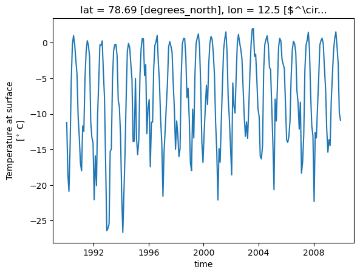
7. Super quick averaging etc with xarray#
da_so4 = dss['mmrso4']
da_so4
<xarray.DataArray 'mmrso4' (member_id: 1, dcpp_init_year: 1, time: 240,
lev: 32, lat: 192, lon: 288)> Size: 2GB
dask.array<getitem, shape=(1, 1, 240, 32, 192, 288), dtype=float32, chunksize=(1, 1, 10, 32, 192, 288), chunktype=numpy.ndarray>
Coordinates:
* member_id (member_id) object 8B 'r1i1p1f1'
* dcpp_init_year (dcpp_init_year) object 8B None
* time (time) datetime64[ns] 2kB 1990-01-15T12:00:00 ... 2009-12...
* lev (lev) float64 256B -3.643 -7.595 -14.36 ... -976.3 -992.6
* lat (lat) float64 2kB -90.0 -89.06 -88.12 ... 88.12 89.06 90.0
* lon (lon) float64 2kB -180.0 -178.8 -177.5 ... 176.2 177.5 178.8
Attributes: (12/19)
cell_measures: area: areacella
cell_methods: area: time: mean
comment: Dry mass of sulfate (SO4) in aerosol particles as a fract...
description: Dry mass of sulfate (SO4) in aerosol particles as a fract...
frequency: mon
id: mmrso4
... ...
time_label: time-mean
time_title: Temporal mean
title: Aerosol Sulfate Mass Mixing Ratio
type: real
units: kg kg-1
variable_id: mmrso4Mean:
da_so4_lmean = da_so4.mean(['time','lon'], keep_attrs=True) #.plot()#ylim=[1000,100], yscale='log')
da_so4_lmean
<xarray.DataArray 'mmrso4' (member_id: 1, dcpp_init_year: 1, lev: 32, lat: 192)> Size: 25kB
dask.array<mean_agg-aggregate, shape=(1, 1, 32, 192), dtype=float32, chunksize=(1, 1, 32, 192), chunktype=numpy.ndarray>
Coordinates:
* member_id (member_id) object 8B 'r1i1p1f1'
* dcpp_init_year (dcpp_init_year) object 8B None
* lev (lev) float64 256B -3.643 -7.595 -14.36 ... -976.3 -992.6
* lat (lat) float64 2kB -90.0 -89.06 -88.12 ... 88.12 89.06 90.0
Attributes: (12/19)
cell_measures: area: areacella
cell_methods: area: time: mean
comment: Dry mass of sulfate (SO4) in aerosol particles as a fract...
description: Dry mass of sulfate (SO4) in aerosol particles as a fract...
frequency: mon
id: mmrso4
... ...
time_label: time-mean
time_title: Temporal mean
title: Aerosol Sulfate Mass Mixing Ratio
type: real
units: kg kg-1
variable_id: mmrso48. Plotting with xarray#
Notice it’s slow now, why?
da_so4_lmean.plot()
<matplotlib.collections.QuadMesh at 0x7f7df23e0a40>
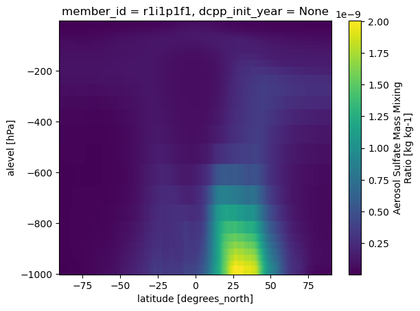
da_so4_lmean['lev'] = np.abs(da_so4_lmean['lev'].values)
da_so4_lmean.plot(
ylim=[1000,100],
yscale='log'
)
<matplotlib.collections.QuadMesh at 0x7f7df0e74e30>
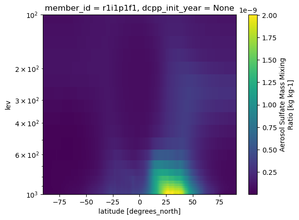
Standard deviation
dss['T_C'].std(['time']).plot()
<matplotlib.collections.QuadMesh at 0x7f7df046e8a0>
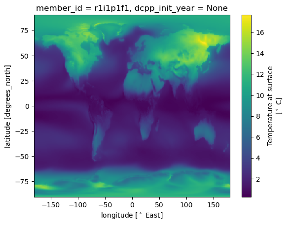
Temperature change much stronger over land than ocean and higher at high latitudes…
9. Mask data and groupby: pick out seasons#
month = ds['time.month']
month
<xarray.DataArray 'month' (time: 1980)> Size: 16kB array([ 1, 2, 3, ..., 10, 11, 12], shape=(1980,)) Coordinates: * time (time) object 16kB 1850-01-15 12:00:00 ... 2014-12-15 12:00:00
dss_JA = (dss
.where(month.isin([7,8]))
.mean('time')
)
dss_JA
<xarray.Dataset> Size: 8MB
Dimensions: (member_id: 1, dcpp_init_year: 1, lat: 192, lon: 288,
lev: 32, nbnd: 2)
Coordinates:
* member_id (member_id) object 8B 'r1i1p1f1'
* dcpp_init_year (dcpp_init_year) object 8B None
* lat (lat) float64 2kB -90.0 -89.06 -88.12 ... 88.12 89.06 90.0
* lon (lon) float64 2kB -180.0 -178.8 -177.5 ... 176.2 177.5 178.8
* lev (lev) float64 256B -3.643 -7.595 -14.36 ... -976.3 -992.6
a_bnds (lev, nbnd) float64 512B dask.array<chunksize=(32, 2), meta=np.ndarray>
b_bnds (lev, nbnd) float64 512B dask.array<chunksize=(32, 2), meta=np.ndarray>
lev_bnds (lev, nbnd) float64 512B dask.array<chunksize=(32, 2), meta=np.ndarray>
Dimensions without coordinates: nbnd
Data variables:
areacella (member_id, dcpp_init_year, lat, lon) float32 221kB dask.array<chunksize=(1, 1, 192, 288), meta=np.ndarray>
a (lev) float64 256B dask.array<chunksize=(32,), meta=np.ndarray>
b (lev) float64 256B dask.array<chunksize=(32,), meta=np.ndarray>
mmrso4 (member_id, dcpp_init_year, lev, lat, lon) float32 7MB dask.array<chunksize=(1, 1, 32, 192, 288), meta=np.ndarray>
p0 float32 4B nan
ps (lat, lon) float32 221kB dask.array<chunksize=(192, 288), meta=np.ndarray>
hurs (member_id, dcpp_init_year, lat, lon) float32 221kB dask.array<chunksize=(1, 1, 192, 288), meta=np.ndarray>
tas (member_id, dcpp_init_year, lat, lon) float32 221kB dask.array<chunksize=(1, 1, 192, 288), meta=np.ndarray>
T_C (member_id, dcpp_init_year, lat, lon) float32 221kB dask.array<chunksize=(1, 1, 192, 288), meta=np.ndarray>
Attributes: (12/58)
Conventions: CF-1.7 CMIP-6.2
activity_id: CMIP
branch_method: standard
branch_time_in_child: 674885.0
branch_time_in_parent: 219000.0
case_id: 15
... ...
intake_esm_attrs:variable_id: areacella
intake_esm_attrs:grid_label: gn
intake_esm_attrs:zstore: gs://cmip6/CMIP6/CMIP/NCAR/CESM2/histor...
intake_esm_attrs:version: 20190308
intake_esm_attrs:_data_format_: zarr
intake_esm_dataset_key: CMIP.historical.CESM2.fx.gndss_season = (dss
.groupby('time.season')
.mean(keep_attrs=True)
)
dss_season
<xarray.Dataset> Size: 33MB
Dimensions: (season: 4, member_id: 1, dcpp_init_year: 1, lev: 32,
lat: 192, lon: 288, nbnd: 2)
Coordinates:
* season (season) object 32B 'DJF' 'JJA' 'MAM' 'SON'
* member_id (member_id) object 8B 'r1i1p1f1'
* dcpp_init_year (dcpp_init_year) object 8B None
* lev (lev) float64 256B -3.643 -7.595 -14.36 ... -976.3 -992.6
* lat (lat) float64 2kB -90.0 -89.06 -88.12 ... 88.12 89.06 90.0
* lon (lon) float64 2kB -180.0 -178.8 -177.5 ... 176.2 177.5 178.8
a_bnds (lev, nbnd) float64 512B dask.array<chunksize=(32, 2), meta=np.ndarray>
b_bnds (lev, nbnd) float64 512B dask.array<chunksize=(32, 2), meta=np.ndarray>
lev_bnds (lev, nbnd) float64 512B dask.array<chunksize=(32, 2), meta=np.ndarray>
Dimensions without coordinates: nbnd
Data variables:
mmrso4 (season, member_id, dcpp_init_year, lev, lat, lon) float32 28MB dask.array<chunksize=(4, 1, 1, 32, 192, 288), meta=np.ndarray>
ps (season, lat, lon) float32 885kB dask.array<chunksize=(4, 192, 288), meta=np.ndarray>
hurs (season, member_id, dcpp_init_year, lat, lon) float32 885kB dask.array<chunksize=(4, 1, 1, 192, 288), meta=np.ndarray>
tas (season, member_id, dcpp_init_year, lat, lon) float32 885kB dask.array<chunksize=(4, 1, 1, 192, 288), meta=np.ndarray>
T_C (season, member_id, dcpp_init_year, lat, lon) float32 885kB dask.array<chunksize=(4, 1, 1, 192, 288), meta=np.ndarray>
areacella (season, member_id, dcpp_init_year, lat, lon) float32 885kB dask.array<chunksize=(4, 1, 1, 192, 288), meta=np.ndarray>
a (season, lev) float64 1kB dask.array<chunksize=(4, 32), meta=np.ndarray>
b (season, lev) float64 1kB dask.array<chunksize=(4, 32), meta=np.ndarray>
p0 (season) float32 16B 1e+05 1e+05 1e+05 1e+05
Attributes: (12/58)
Conventions: CF-1.7 CMIP-6.2
activity_id: CMIP
branch_method: standard
branch_time_in_child: 674885.0
branch_time_in_parent: 219000.0
case_id: 15
... ...
intake_esm_attrs:variable_id: areacella
intake_esm_attrs:grid_label: gn
intake_esm_attrs:zstore: gs://cmip6/CMIP6/CMIP/NCAR/CESM2/histor...
intake_esm_attrs:version: 20190308
intake_esm_attrs:_data_format_: zarr
intake_esm_dataset_key: CMIP.historical.CESM2.fx.gnda_TC = dss_season['T_C']
%%time
da_TC.plot(col='season')
CPU times: user 1.24 s, sys: 294 ms, total: 1.53 s
Wall time: 3.49 s
<xarray.plot.facetgrid.FacetGrid at 0x7f7df031ba10>
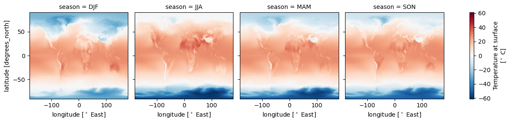
Tip: Might want to load or compute.#
from dask.diagnostics import ProgressBar
%%time
with ProgressBar():
da_TC.load()
[########################################] | 100% Completed | 3.32 ss
CPU times: user 910 ms, sys: 256 ms, total: 1.17 s
Wall time: 3.33 s
10. Controle the plot visuals:#
%%time
da_TC.plot(
col = 'season',
cmap = 'coolwarm',
xlim = [-100,100],
ylim = [-0,90],
cbar_kwargs = {'label':'Temperature [$^\circ$C]'}
)
CPU times: user 151 ms, sys: 3.23 ms, total: 155 ms
Wall time: 154 ms
<unknown>:6: SyntaxWarning: invalid escape sequence '\c'
<xarray.plot.facetgrid.FacetGrid at 0x7f7dc79df050>
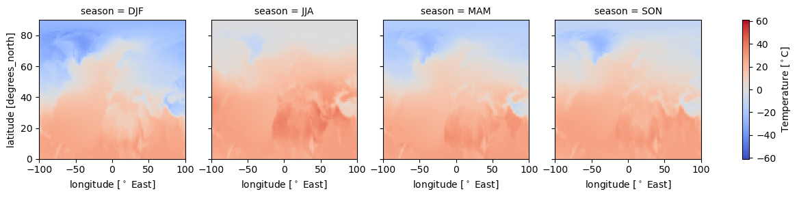
Xarray uses certain attributes as labels when plotting:
da_TC = da_TC.assign_attrs({'long_name': 'Temperature near surface'})
da_TC.mean('season', keep_attrs=True).plot()
<matplotlib.collections.QuadMesh at 0x7f7dc7649cd0>
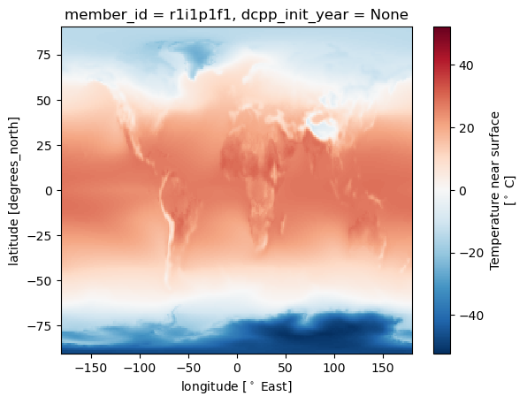
11. Plotting on maps with cartopy#
See more here:
import cartopy as cy
import cartopy.crs as ccrs
da_plt = dss['mmrso4'].isel(lev=-1).mean('time', keep_attrs=True).squeeze()#('member_id')
da_plt
<xarray.DataArray 'mmrso4' (lat: 192, lon: 288)> Size: 221kB
dask.array<getitem, shape=(192, 288), dtype=float32, chunksize=(192, 288), chunktype=numpy.ndarray>
Coordinates:
* lat (lat) float64 2kB -90.0 -89.06 -88.12 ... 88.12 89.06 90.0
* lon (lon) float64 2kB -180.0 -178.8 -177.5 ... 176.2 177.5 178.8
member_id <U8 32B 'r1i1p1f1'
dcpp_init_year object 8B None
lev float64 8B -992.6
Attributes: (12/19)
cell_measures: area: areacella
cell_methods: area: time: mean
comment: Dry mass of sulfate (SO4) in aerosol particles as a fract...
description: Dry mass of sulfate (SO4) in aerosol particles as a fract...
frequency: mon
id: mmrso4
... ...
time_label: time-mean
time_title: Temporal mean
title: Aerosol Sulfate Mass Mixing Ratio
type: real
units: kg kg-1
variable_id: mmrso4from matplotlib.colors import LogNorm
with ProgressBar():
da_plt.load()
[########################################] | 100% Completed | 15.82 s
da_plt
<xarray.DataArray 'mmrso4' (lat: 192, lon: 288)> Size: 221kB
array([[7.0655860e-12, 7.0656250e-12, 7.0656757e-12, ..., 7.0654576e-12,
7.0654355e-12, 7.0655361e-12],
[7.4523243e-12, 7.4701807e-12, 7.4873970e-12, ..., 7.3945355e-12,
7.4097612e-12, 7.4321209e-12],
[8.0703352e-12, 8.0987569e-12, 8.1331625e-12, ..., 7.9838211e-12,
8.0185901e-12, 8.0491074e-12],
...,
[3.2195208e-11, 3.2224824e-11, 3.2185154e-11, ..., 3.2204971e-11,
3.2198522e-11, 3.2200648e-11],
[3.1399085e-11, 3.1360515e-11, 3.1390588e-11, ..., 3.1466201e-11,
3.1436742e-11, 3.1405469e-11],
[3.0563073e-11, 3.0563111e-11, 3.0562844e-11, ..., 3.0563923e-11,
3.0565089e-11, 3.0564860e-11]], shape=(192, 288), dtype=float32)
Coordinates:
* lat (lat) float64 2kB -90.0 -89.06 -88.12 ... 88.12 89.06 90.0
* lon (lon) float64 2kB -180.0 -178.8 -177.5 ... 176.2 177.5 178.8
member_id <U8 32B 'r1i1p1f1'
dcpp_init_year object 8B None
lev float64 8B -992.6
Attributes: (12/19)
cell_measures: area: areacella
cell_methods: area: time: mean
comment: Dry mass of sulfate (SO4) in aerosol particles as a fract...
description: Dry mass of sulfate (SO4) in aerosol particles as a fract...
frequency: mon
id: mmrso4
... ...
time_label: time-mean
time_title: Temporal mean
title: Aerosol Sulfate Mass Mixing Ratio
type: real
units: kg kg-1
variable_id: mmrso4projection tells cartopy how we want the data visualized
transform tells it what kind of grid the data is on:
PlateCarree is a regular lat, lon grid.
f, ax = plt.subplots(1, 1, dpi=150, figsize = [6,3],
subplot_kw={'projection':ccrs.Robinson()},
#subplot_kw={'projection':ccrs.Orthographic()},
)
da_plt.plot.pcolormesh(
cmap = 'Reds',
ax=ax,
transform = ccrs.PlateCarree(),
robust=True,
norm = LogNorm(), # to add log scale colorbar
#cbar_kwargs={
# #'label':'Wind Speed [m/s]',
# 'orientation':'horizontal',
# 'shrink':.8
#},
levels = 6
)
#ax.set_title('Bottom level: Mean over Time')
ax.coastlines(linewidth=.1)
gl = ax.gridlines(draw_labels=True,#{'bottom':True, 'left':True},
xlocs=[-180,-140,0,140, 180],
ylocs=[-90,-45,0,45,90],
x_inline=False,
y_inline=False,
color='k',
linestyle='dotted'
)
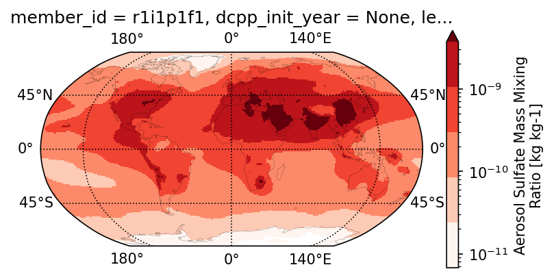
12. Global average: weighted means!#
dss['T_C'].mean().compute()
<xarray.DataArray 'T_C' ()> Size: 4B
array(5.4478564, dtype=float32)
Attributes: (12/19)
cell_measures: area: areacella
cell_methods: area: time: mean
comment: near-surface (usually, 2 meter) air temperature
description: near-surface (usually, 2 meter) air temperature
frequency: mon
id: tas
... ...
time_label: time-mean
time_title: Temporal mean
title: Near-Surface Air Temperature
type: real
units: $^\circ$ C
variable_id: tasWhy is this wrong?
(dss['T_C']
.weighted(dss['areacella'])
.mean()
.compute()
)
<xarray.DataArray 'T_C' ()> Size: 4B
array(14.715101, dtype=float32)
Attributes: (12/19)
cell_measures: area: areacella
cell_methods: area: time: mean
comment: near-surface (usually, 2 meter) air temperature
description: near-surface (usually, 2 meter) air temperature
frequency: mon
id: tas
... ...
time_label: time-mean
time_title: Temporal mean
title: Near-Surface Air Temperature
type: real
units: $^\circ$ C
variable_id: tasdss['areacella'].plot()
<matplotlib.collections.QuadMesh at 0x7f7ea8e70f50>
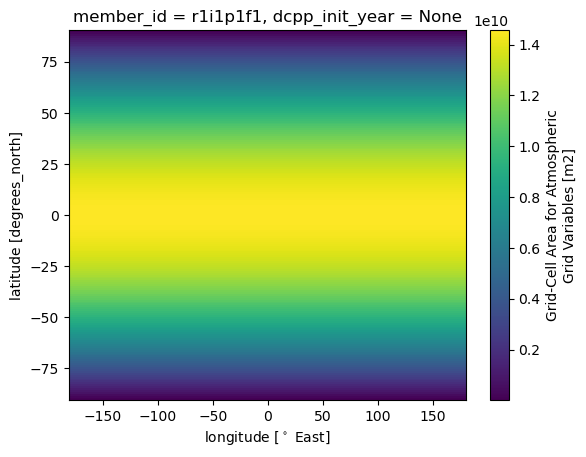
13 Filtering, grouping etc#
Pick out station:#
lat_kristineberg = 58.24
lon_kristineberg = 11.44
# pick out surface
ds_surf =dss.isel(lev=-1)
ds_kristineberg = ds_surf.sel(lat=lat_kristineberg, lon = lon_kristineberg, method ='nearest')
ds_kristineberg['mmrso4'].plot()
[<matplotlib.lines.Line2D at 0x7f7ea8fac230>]
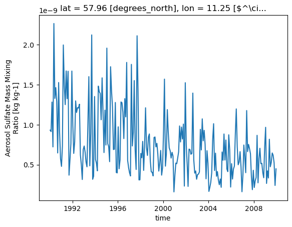
Pick out the vairables we need.
with ProgressBar():
ds_kristineberg.load()
[########################################] | 100% Completed | 18.64 ss
vl = ['mmrso4','hurs','tas','T_C']
ds_kristineberg[vl]
<xarray.Dataset> Size: 6kB
Dimensions: (member_id: 1, dcpp_init_year: 1, time: 240)
Coordinates:
* member_id (member_id) object 8B 'r1i1p1f1'
* dcpp_init_year (dcpp_init_year) object 8B None
* time (time) datetime64[ns] 2kB 1990-01-15T12:00:00 ... 2009-12...
lat float64 8B 57.96
lon float64 8B 11.25
lev float64 8B -992.6
Data variables:
mmrso4 (member_id, dcpp_init_year, time) float32 960B 9.319e-10 ...
hurs (member_id, dcpp_init_year, time) float32 960B 85.65 ... ...
tas (member_id, dcpp_init_year, time) float32 960B 277.0 ... ...
T_C (member_id, dcpp_init_year, time) float32 960B 3.886 ... ...
Attributes: (12/58)
Conventions: CF-1.7 CMIP-6.2
activity_id: CMIP
branch_method: standard
branch_time_in_child: 674885.0
branch_time_in_parent: 219000.0
case_id: 15
... ...
intake_esm_attrs:variable_id: areacella
intake_esm_attrs:grid_label: gn
intake_esm_attrs:zstore: gs://cmip6/CMIP6/CMIP/NCAR/CESM2/histor...
intake_esm_attrs:version: 20190308
intake_esm_attrs:_data_format_: zarr
intake_esm_dataset_key: CMIP.historical.CESM2.fx.gn13.1 Resample#
ds_yearly = ds_kristineberg.resample(time='YE').mean('time')
ds_yearly['T_C'].plot()
ds_kristineberg['T_C'].plot(linewidth=0, marker='.')
[<matplotlib.lines.Line2D at 0x7f7dc68b87a0>]
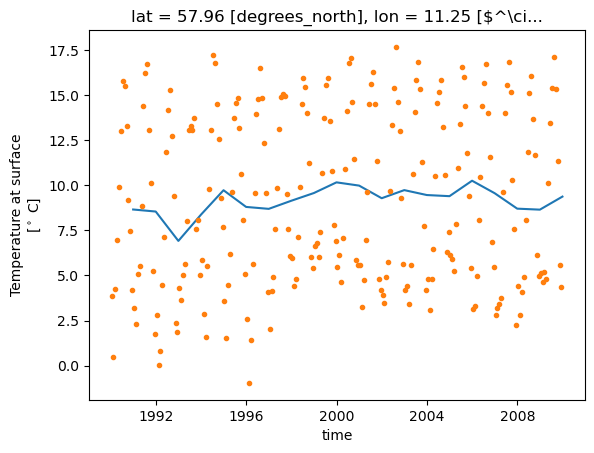
13.2 Filter data using .where():#
ds_kristineberg['season'] = ds_kristineberg['time.season']
for s in ['MAM','JJA','SON','DJF']:
ds_kristineberg.where(ds_kristineberg['season']==s)['T_C'].plot.hist(alpha=0.5, bins=20, label=s)
plt.legend()
<matplotlib.legend.Legend at 0x7f7dc68869c0>
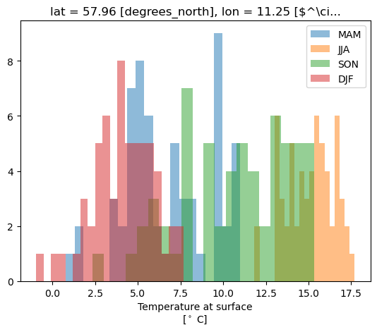
13.3 Group by with .groupby()#
ds_kristineberg['month'] = ds_kristineberg['time.month']
ds_kristineberg
<xarray.Dataset> Size: 12kB
Dimensions: (member_id: 1, dcpp_init_year: 1, time: 240, nbnd: 2)
Coordinates:
* member_id (member_id) object 8B 'r1i1p1f1'
* dcpp_init_year (dcpp_init_year) object 8B None
* time (time) datetime64[ns] 2kB 1990-01-15T12:00:00 ... 2009-12...
lat float64 8B 57.96
lon float64 8B 11.25
a_bnds (nbnd) float64 16B 0.005032 0.002255
b_bnds (nbnd) float64 16B 0.0 0.0
lev float64 8B -992.6
lev_bnds (nbnd) float64 16B 0.005032 0.002255
Dimensions without coordinates: nbnd
Data variables:
areacella (member_id, dcpp_init_year) float32 4B 7.728e+09
a float64 8B 0.0
b float64 8B 0.9926
mmrso4 (member_id, dcpp_init_year, time) float32 960B 9.319e-10 ...
p0 float32 4B 1e+05
ps (time) float32 960B 1.009e+05 9.98e+04 ... 1.001e+05
hurs (member_id, dcpp_init_year, time) float32 960B 85.65 ... ...
tas (member_id, dcpp_init_year, time) float32 960B 277.0 ... ...
T_C (member_id, dcpp_init_year, time) float32 960B 3.886 ... ...
season (time) <U3 3kB 'DJF' 'DJF' 'MAM' 'MAM' ... 'SON' 'SON' 'DJF'
month (time) int64 2kB 1 2 3 4 5 6 7 8 9 ... 4 5 6 7 8 9 10 11 12
Attributes: (12/58)
Conventions: CF-1.7 CMIP-6.2
activity_id: CMIP
branch_method: standard
branch_time_in_child: 674885.0
branch_time_in_parent: 219000.0
case_id: 15
... ...
intake_esm_attrs:variable_id: areacella
intake_esm_attrs:grid_label: gn
intake_esm_attrs:zstore: gs://cmip6/CMIP6/CMIP/NCAR/CESM2/histor...
intake_esm_attrs:version: 20190308
intake_esm_attrs:_data_format_: zarr
intake_esm_dataset_key: CMIP.historical.CESM2.fx.gn(ds_kristineberg['T_C']
.groupby(ds_kristineberg['month'])
.median()
.plot()
)
[<matplotlib.lines.Line2D at 0x7f7dc504e5d0>]
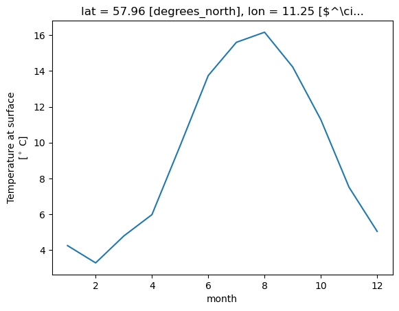
14. Convert to pandas & do some random fun stuff:#
Maybe we e.g. want to compare with a station, or just use some of the considerable functionalities available from pandas. It’s easy to convert back and forth between xarray and pandas:
A lot of these functions also exist in xarray!Obs: might want to convert to pandas#
At this point we basically have a time series and the dataset is not to big, so might want to convert to pandas:
subset_of_variables = ['mmrso4','hurs','tas','T_C','season']
df_kristineberg = ds_kristineberg[subset_of_variables].squeeze().to_dataframe()
df_kristineberg
lets do something unnecesarily complicated :D#
Convert to pandas dataframe#
Because more functionality
df = dss.isel(lev=-1)[vl].to_dataframe()
df_ri = df.reset_index()
df_ri.head()
qcut, cut#
qcut splits the data into quantile ranges
df_ri['hurs_cat'] = pd.qcut(df_ri['hurs'],
q=[0.05,0.17, 0.34,0.66, 0.83,0.95],
labels=['very low','low','med','high','very high'],
)
Cut cuts into categories
df_ri['lat_cat'] = pd.cut(df_ri['lat'], [-90,-60,-30,0,30,60,90],
labels=['S polar','S mid','S tropics', 'N tropic', 'N mid','N polar'])
df_ri
df_ri.sample(n=20000).groupby('lat_cat').mean(numeric_only=True)
sns.boxenplot(x="lat_cat", y="hurs",
color="b",
#scale="linear",
width_method='linear',
data=df_ri)#.sample(n=20000))
sns.boxenplot(x="hurs_cat",
y="mmrso4",
color="b",
width_method='linear',
data=df_ri.sample(n=20000),
)
sns.displot(x="mmrso4",
hue='lat_cat',
log_scale=True,
kind='kde',
data=df_ri.sample(n=20000),
multiple="stack"
)
Convert back to xarray if we need:#
ds_new = df_ri.set_index(['time','lat','lon']).to_xarray()
ds_new
mask by category#
ds_new.where(ds_new['hurs_cat']=='very low').mean(['time','lon'])['mmrso4'].plot(label='very low')#vmin = 0, vmax = 1.5e-8)
ds_new.where(ds_new['hurs_cat']=='low').mean(['time','lon'])['mmrso4'].plot(label='low')#vmin = 0, vmax = 1.5e-8)
ds_new.where(ds_new['hurs_cat']=='high').mean(['time','lon'])['mmrso4'].plot(label='high')#vmin = 0, vmax = 1.5e-8)
ds_new.where(ds_new['hurs_cat']=='very high').mean(['time','lon'], keep_attrs=True)['mmrso4'].plot(label='very high')#vmin = 0, vmax = 1.5e-8)
plt.legend()
Improve and reduce risk of typo:#
for cat in ['very low','low','high','very high']:
ds_new.where(ds_new['hurs_cat']==cat).mean(['time','lon'])['mmrso4'].plot(label=cat)
plt.legend()